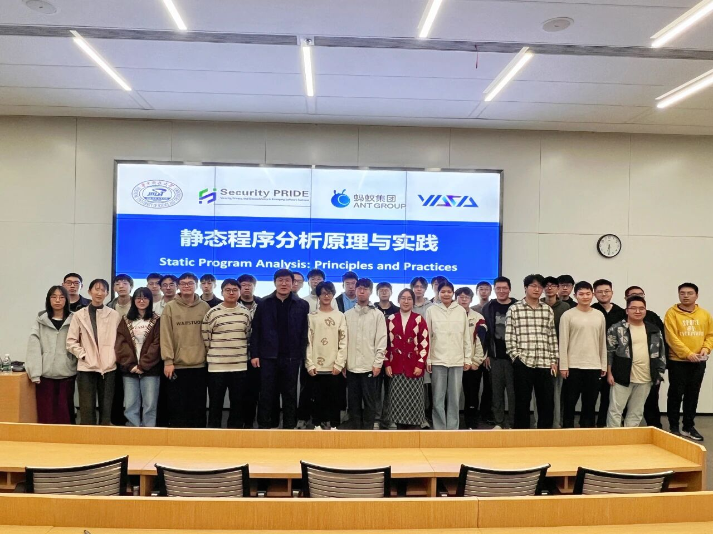
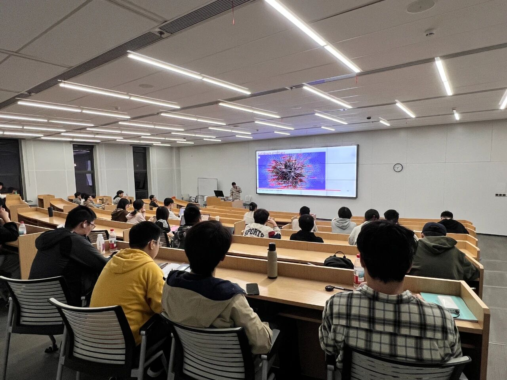

深度掌握YASA的使用方法和操作技巧 深入理解YASA的设计原理和架构思想 基于YASA开展创新性研究工作 参与YASA开源社区的建设与发展
YASA（Yet Another Static Analyzer ）是一个开源的静态程序分析项目。其核心是定义了一种多语言通用的中间表达——统一抽象语法树（Unified Abstract Syntax Tree，简称UAST），基于UAST实现了一套高精度的静态程序分析框架。用户可通过编写检查器（Checker）的方式，灵活实现诸如AST查询、数据流分析、函数调用图分析等多种程序分析任务，并通过SDK/自研统一声明式查询语言UQL/MCP等方式对外开放能力。
YASA官网：
https://cybersec.antgroup.com/station
YASA：
https://github.com/antgroup/YASA-Engine/